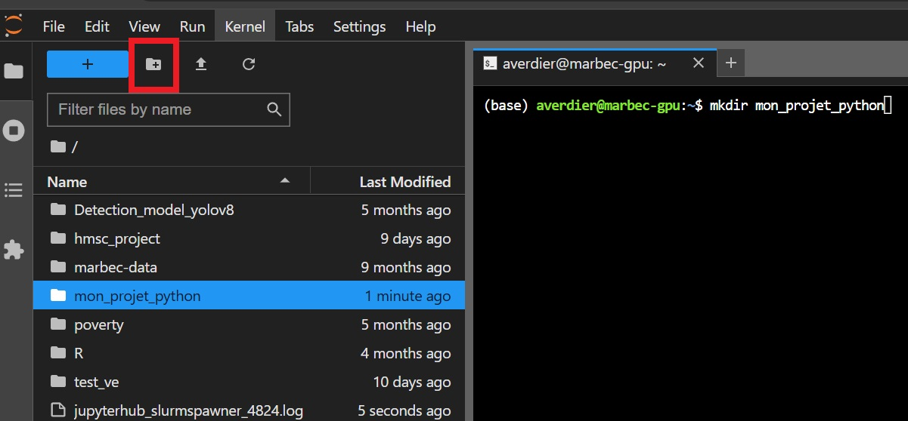
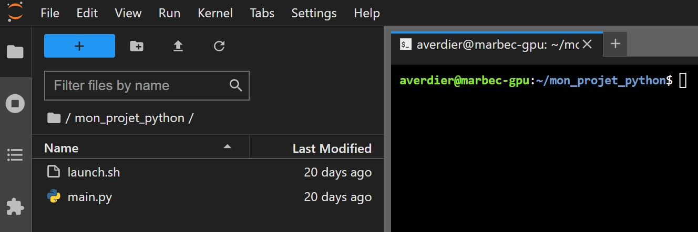

Running a simple example on Marbec-GPU
Throughout this tutorial, you will find everything you need to run a Python or R script (displaying “Hello World <3”), along with additional tips and resources that will be helpful for other MARBEC-GPU tasks.
There are two main ways to run a program on Marbec-GPU. The first is to use a task submission script, the second is to use the session interactively. In this example, we will use the first method which is by far the most suitable and easily adaptable for more complex programs.
When you want to run a more complex program, make sure your project works locally (on your personal computer). This means setting up your environment correctly and debugging your script locally. Once everything works successfully on your PC (even using only 1% of the dataset if you encounter computational constraints), you can then deploy your project on MARBEC-GPU.
Start by creating a working directory in which the different files will be created. In bash command it would be :
cd ~ # go to the home directory
mkdir my_project # create a folder for the projectOtherwise you can use the Jupyter interface to create a working directory with the icon framed in red below:

Then move to this directory ( cd my_project/ ).
Steps
There are three main steps to successfully submit a job for a task on Marbec-GPU:
1. Prepare the Python or R Script
Create a simple Python or R script that displays “Hello World <3”. Here is an example of a script:
print("Hello World <3")Save this script in a file named main.py or main.R (depending on the desired language) in the working directory you created earlier.
2. Prepare a Bash Script with SLURM Arguments
In order to run the script correctly, you will need to create a bash script launch.sh taking care to mention:
- the SLURM arguments, specifying which resources to allocate, the job name, the output file, etc.
- Python/R script execution.
Here is a minimal example of a bash script:
#!/bin/bash
#SBATCH --job-name=my_job # Job name
#SBATCH --output=job_%j.out` # Standard output and error log
#SBATCH --gres=gpu:1 # Number of GPUs (Remove the line if no GPU is required.)
#SBATCH --mem=4G # Memory allocation (4 GB)
#SBATCH -c 1 # Number of CPU cores
# execute python file
python main.py
# execute R file
Rscript main.RIt is possible to specify other SLURM arguments. For more information on SLURM arguments, you can consult the official SLURM documentation here.
3. Execute the Bash Script
After the previous 2 steps, the working directory should contain the following files: launch.sh and main.py/main.R:  The final step is to submit your launch.sh script created in the previous section. To do this, you need to use the sbatch command (see documentation).
In the terminal, run the following command:
sbatch launch.sh
If the SLURM parameters (#SBATCH arg) are correctly filled in, you should see a job submission confirmation message: Submitted batch job 1234567. Otherwise, an error message will appear instead. Upon successful submission, SLURM checks the requested resources and places the job in the queue (state PENDING) until the resources become available. Once the resources are available, the job runs (state RUNNING). An output file is then created in the current directory with the name specified in the bash script (#SBATCH --output=job_%j.out). A second file containing error messages can appear if specified (#SBATCH --error=job_%j.err).
You can track the progress of your job with the squeue -u $USER or squeue -j 1234567 command (with 1234567 being your job number). You can also list all jobs currently running or in the queue with squeue -O NAME,UserName,TimeUsed,tres-per-node,state,JOBID. The STATE column in particular indicates the job’s status (PENDING RUNNING). For more details on the squeue command, you can consult the documentation.
To cancel a job (running or still in the queue), use the scancel 1234567 command (with 1234567 being your job number).
The output.log file containing the outputs of your python script is created in the current directory. You can view it with the cat output.log command or simply by double-clicking on it. It should look like this:
Hello World <3